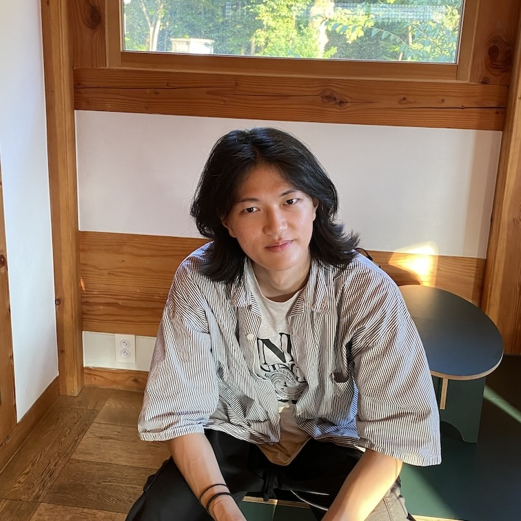

|
Jiwon Kim
I'm studing at Yonsei University, majoring in Computer Science.
I am interested in computer graphics, especially in real-time rendering.
Recently, I am also interested in NeRF, which is useful for AR and can replace the traditional rendering.
Email /
CV /
Github
|

|
Research Interest
Computer Graphics: Real-time rendering, Procedural generation, Shader programming
Computer Vision: 3D reconstruction, Image generation
|
Education
Yonsei University, B.S. in Computer Science
Mar 2022 – Present
GPA: 3.63/4.30 (overall), 3.87/4.30 (major)
|
Projects
The early bird catches the worm
Apr 2024 - Jun 2024
An OpenGL game with own game engine for an assignment for CSI4105 (Computer Graphics).
Implemented some basic features of game engine: gravity, collision, animations.
The terrain is generated automatically every start using perlin noise.
Discord Suno Player
Sep 2024
A toy project which plays MP3 files extracted from SUNO AI, an AI song generation service, on Discord chat application.
A chatbot with simple HTML parser and FFmpeg audio streaming.
|
Courses taken
From Yonsei University
Computer Graphics, Multicore and GPU Programming, Scientific Computing, Algorithm Analysis
An introduction to computer graphics, provided by Korea University.
Covers theoretical basics like coordinates, transformation, GPU pipelines.
Online course for OpenGL beginners.
Covers OpenGL APIs and implemetation of basic computer graphics features like shadow mapping.
|
Expriences
PoolC programming club
Sep 2024 - Present
Participated in some seminars for game development.
|
Feel free to steal this website's source code. Do not scrape the HTML from this page itself, as it includes analytics tags that you do not want on your own website — use the github code instead. Also, consider using Leonid Keselman's Jekyll fork of this page.
|
|
{kind=link}